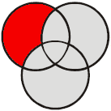

Not Even Odd
Musings and mumblings of a random nerd
Last 10 Posts:
| Tags see all tags | All Posts (alphabetically | chronologically) |
This is a series of posts which technically describes how Not Even Odd is built. It is primarily meant as a guide for static website creation using TiddlyWiki.
|  |
Static site with TiddlyWiki
Hosting with GitHub
|
All the dynamic goodness of TiddlyWiki (such as the search, the sidebar, ...) will not be available in the static HTML pages. Thus you must plan a way for the user to navigate the site. For this site, I kept things very simple and created four tiddlers which contains basic lists:
Those are simple lists For example for , simple lists based on the conventions chosen for content selection. it would be something like:
All Tags:
<<list-links filter:"[tags[]!is[system]!has[draft.of]!tag[private]!tag[draft]]">>you may want to include some navigation element include in the site template. This can be done in the
< html from the site template ... >
`<$view tiddler="All Tags" format="htmlwikified" />`
</ html from the site template ... >Also interesting is what the landing page of the site (ie. index.html file) should be. There are many options depending on how you want your site to look like. It could be a normal landing page, but in the case of this site, I decided the landing page should be the latest post.
I thus created a simple tiddler index.html_pointer (which I tag as private) which just shows the latest post:
<$list filter="[!tag[private]!tag[draft]!has[notpost]!has[draft.of]!is[system]sort[created]last[]]" />and I use this information during the static pages generation to point index.html to the right page:
# site generation
tiddlywiki --rendertiddlers ...
# index.html as a symlink to the latest post
tiddlywiki --rendertiddler index.html_pointer index.html text/html
INDEX=$(sed -ne 's/.*href="#\(.*\)">.*/\1/p' output/index.html)
rm output/index.html
ln -s "$INDEX.html" output/index.htmlHere I am again using a tiny bit of shell along with TiddlyWiki and it seems like a powerful technique.
Musings and mumblings of a random nerd
Last 10 Posts:
| Tags see all tags | All Posts (alphabetically | chronologically) |